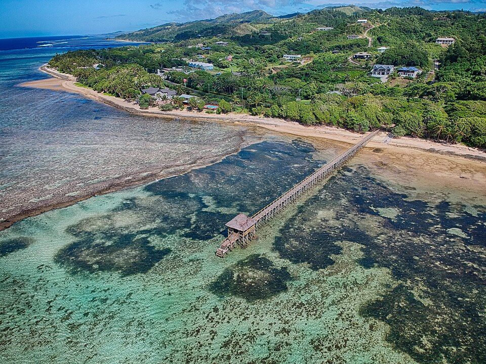

Maui Jetty Coast
Maui Jetty Coast is one of the destinations selected for this photo tour of Fiji. Coastal locations offer opportunities to appreciate the ocean, scenery, and relationship between island communities and the sea. This page highlights the location through photographs.
